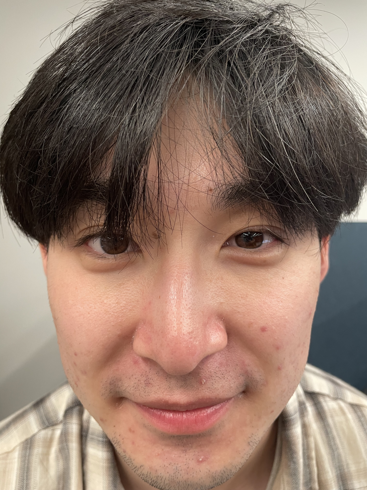
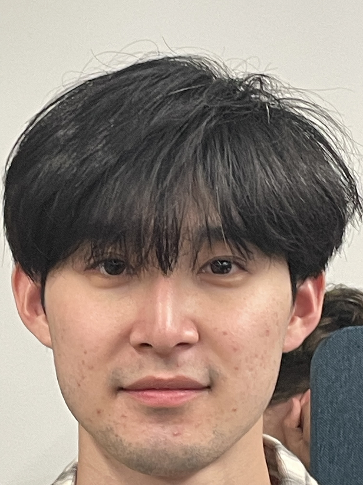
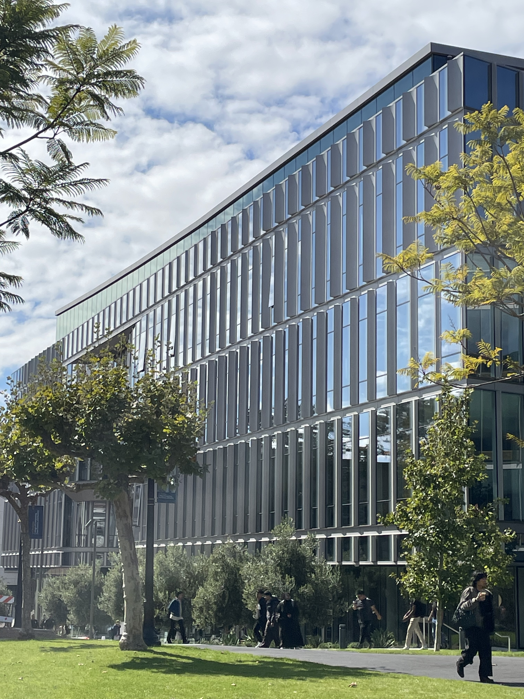
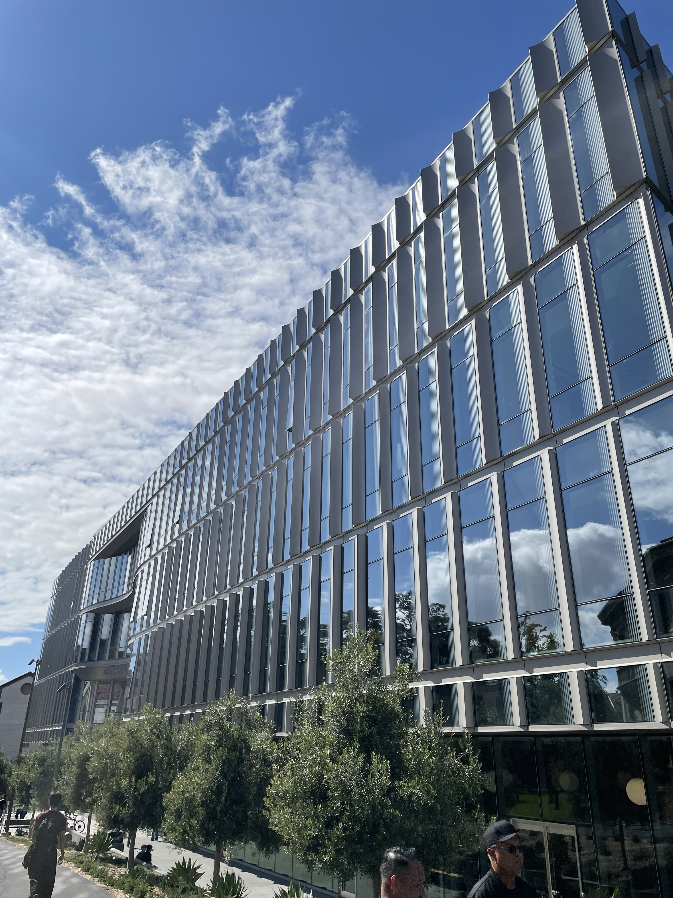
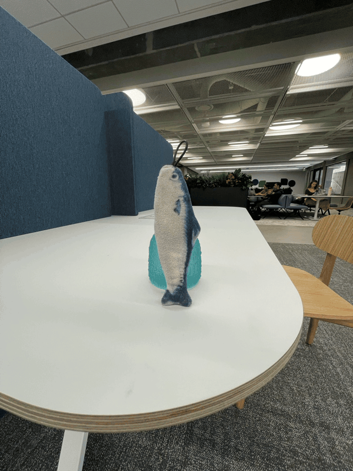

Picture of my friend taken close up vs. far away, zoomed in.


The second portrait looks a lot better than the first one. The first one is taken from very close up (20cm), distorting the proportions of the portrait, especially along the edges. The second one has much better proportions since it is taken from a far (1m) zoomed in (4.7x), making the angles smaller when coming into the camera lens.
The Gateway Building taken from far away, zoomed in vs. close up, not zoomed in.


The first picture looks flattened/compressed compared to the second one because of the angle it is taken at. Since it was taken from further away, the angles of the building are less pronounced as opposed to when they are taken from closer up.
Dolly zoom of an Anchovy plushie.
